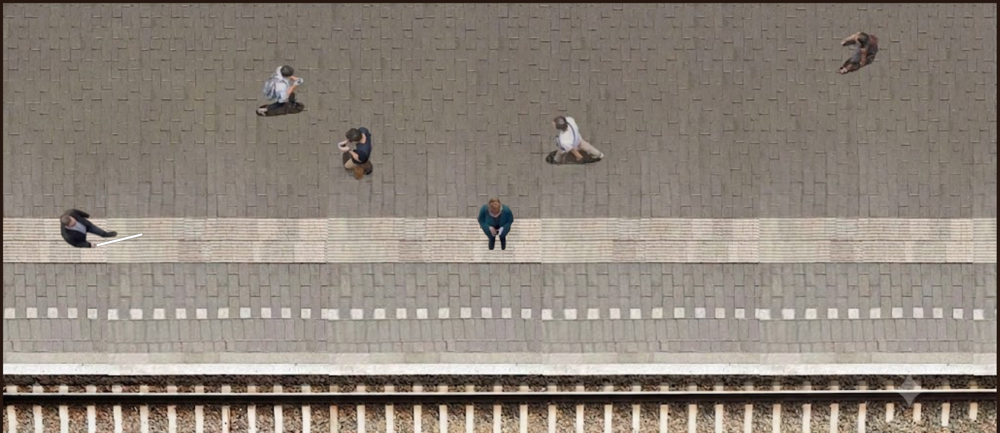
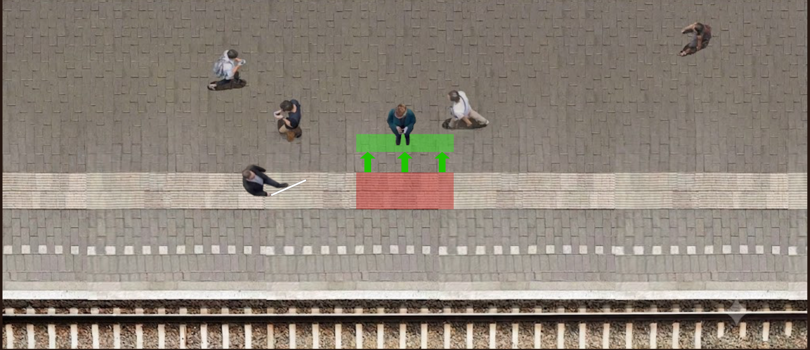

Sturing van Reizigers
Sturing van Reizigers is een concept waarin projecties worden gebruikt om reizigers van de geleidelijnen te laten stappen.
-

20 weken
-

Februari 2026 - juni 2026
-

UX Research & Behavioural Designer
Het probleem
Voor visueel beperkte reizigers zijn de geleidelijnen een onmisbaar middel om zelfstandig en veilig te navigeren. In de praktijk worden deze lijnen echter vaak geblokkeerd door ziende reizigers. Deze ziende reizigers bevinden zich vaak in een ‘hyperfocus’ op hun mobiel, waardoor ze onbewust op deze lijnen staan.
Wanneer een visueel beperkte reiziger de geleidelijn volgt, kan dit leiden tot onverwachte botsingen. Dit veroorzaakt schrik en irritatie bij de visueel beperkte reiziger en een gevoel van schuld of verwarring bij de wachtende reiziger.
Design Challenge
"Hoe kan ik het gedrag van ziende reizigers op de lange termijn veranderen, met als doel dat de geleidelijnen op treinstations vrijgehouden worden?"
Onderzoek en inzichten
Om achter het gedrag te komen, werd kwalitatief onderzoek gecombineerd met expert-interviews bij Koninklijke Visio, Bartimeus en Onbeperkt Amersfoort.
Stakeholders
Gedragsanalyse van de wachtende reiziger
-
Reizigers zoeken een comfortabele plek om te wachten (leunen/zitten) of stellen zich op bij het perronvak waar hun treindeur stopt voor een snelle uitstap.
-
Reizigers willen niet aangesproken of gecorrigeerd worden door vreemden. Ze willen best helpen om de lijn vrij te houden, mits het geen extra moeite of cognitieve belasting kost.
-
Angst om te dicht bij de perronrand te staan of te dicht bij andere mensen. De geleidelijn voelt voor hen intuïtief als een 'veilige afstand' tot het spoor.
Benchmarkanalyse
Bestaande landelijke campagnes (zoals "Houd de lijn vrij") leunen sterk op statische beelden en stoeptegels. Deze hebben op lange termijn een lage conversie (ca. 8%), omdat reizigers er na verloop van tijd aan wennen en het signaal negeren.
Ontwerpen voor gedragsverandering
Met behulp van het SWAC-model is vastgesteld dat de actie extreem eenvoudig moet zijn om te werken op het moment dat belangrijk is.
Behavioural Statement
“Hoe zouden we de wachtende reiziger kunnen helpen om een locatie uit te kiezen op het perron om te staan wachten op de trein door ze een andere locatie te laten uitkiezen op het perron door ze te stimuleren om verder van het spoor te staan en een nieuwe vaste plek te creëren.”
-

16 kwalitatieve testen
-

5 expertinterviews met Koninklijke Visio, Bartiméus & Onbeperkt Amersfoort
Prototypering en testen
Alle prototypen zijn getest in het Immersive Lab, waar de stationsomgeving werd geprojecteerd. De testpersonen kregen een opdracht om een reis op te zoeken in de NS-app om ze in de juiste mindset te krijgen.
De kerninzichten
-
De reden dat ziende reizigers op de geleidelijnen lopen of staan is meestal niet onwil, maar een gebrek aan oplettendheid of een vaste gewoonte hebben. De hyperfocus op hun mobiel is een van de belangrijkste oorzaken voor de onoplettendheid.
-
Het concept moet ziende reizigers op een intuïtieve en positieve manier stimuleren om afstand te houden van de geleidelijn, zonder het gevoel te geven dat ze worden bestraft of belerend worden toegesproken.
-
In plaats van de geleidelijn continu of onnodig vrij te houden (wat op de lange termijn irritatie oproept), moet het product specifiek worden geactiveerd zodra er een slechtziende reiziger aankomt.
-
De interventie moet minimale cognitieve inspanning vragen van de wachtende reiziger: de reiziger volgt hun intuïtieve reflex en zet binnen seconden een stap achteruit.
-
De kleur rood roept een ‘mag niet’-reactie op bij de doelgroep, waarna de groene pijlen en vlakken de doelgroep intuïtief naar een ‘veilige’ plek sturen.
-
Visuele symbolen werken sneller en effectiever dan tekst.
-
Zodra de wachtende reiziger de stap achteruit heeft gezet en de slechtziende reiziger voorbij ziet lopen, legt hij de link met de geleidelijn. Dit creëert een gevoel van behulpzaamheid.
Het concept
Sturing van Reizigers is een interventie die pas activeert wanneer een visueel beperkte reiziger de geleidelijn actief gebruikt én er een wachtende reiziger op de lijn staat.
Hoe werkt het?
-
De situatie begint als volgt: een reiziger staat te wachten op zijn mobiel. Hij staat onbedoeld op de geleidelijn. Vervolgens komt er een slecht ziende reiziger aanlopen.

-
Het product gaat alleen aan als een slechtziende reiziger gedetecteerd wordt en er een wachtende reiziger op de geleidelijn staan. Dit voorkomt de irritatie van aan de kant gaan als dit geen nut heeft.
-
Er wordt gedetecteerd dat er een slecht ziende reiziger aankomt én dat iemand stilstaat op de geleidelijn.
-
-
Vervolgens gaat de projectie aan. Dit werkt als de ‘trigger’, waardoor de doelgroep automatisch naar beneden kijkt en van het rood af stapt. Het groene vlak zien ze intuïtief als een ‘veilige’ plek.
![Slechtziende reiziger komt aanlopen. Projectie gaat aan. Rode projectie op de geleidelijn met groene pijlen die de wachtende reiziger leiden naar het groene vlak achter de lijn. Teksten: 'Het kleurgebruik voegt toe aan het intuïtieve, waardoor de doelgroep automatisch richting het groene vlak loopt.', 'Voor de probleemsituatie plaatsvindt, wordt de wachtende reiziger uit de hyperfocus gehaald door de projectie.', 'Het product kan via zicht ervaren worden.', 'De projectie stuurt de wachtende reiziger verder van de perronrand af.'](../img/sturing-storyboard/bord3.png)
-
Het kleurgebruik voegt toe aan het intuïtieve, waardoor de doelgroep automatisch richting het groene vlak loopt.
-
Voor de probleemsituatie plaatsvindt, wordt de wachtende reiziger uit de hyperfocus gehaald door de projectie.
-
Het product kan met het zintuig zicht ervaren worden.
-
De projectie stuurt de wachtende reiziger verder van de perronrand af.
-
-
Voordat de slechtziende persoon dichtbij genoeg is voor confrontatie, staat de wachtende reiziger al op het groene vlak. Dit zorgt ervoor dat er geen fysiek of verbaal contact is tussen de reizigers.

-
In totaal duurt het terugstappen minder dan ~5 seconden en werkt het intuïtief.
-
De wachtende reiziger legt de connectie tussen de geleidelijn en de visueel beperkte reiziger. Ze weten nu waarom ze aan de kant gaan en willen hiermee helpen.
-
-
De probleemsituatie wordt voorkomen en beide reizigers kunnen zonder slecht gevoel of irritatie verder met hun reis.

-
Er is nu geen 'confrontatie' meer tussen de wachtende en de visueel beperkte reiziger. Er is dus geen fysiek of verbaal contact.
-
Uit testen blijkt dat de doelgroep dit geen negatief gevoel geeft. Ze zijn eerst verward, tot ze de connectie leggen met de visueel beperkte reiziger.
-
De slechtziende reiziger kan ongestoord verder lopen.
-
De visueel beperkte reiziger hoeft niemand aan te spreken om aan de kant te gaan.
-
Validering & evaluatie
In de laatste tests voerde 4/5 testpersonen het gewenste gedrag automatisch uit. Het concept reageert op de automatische reflexen van de doelgroep en sluit aan bij de wens van wachtende reizigers om behulpzaam te zijn zonder aangesproken te worden.
Om verwarring bij machinisten te voorkomen, wordt de projectie automatisch uitgeschakeld wanneer er een trein het perron oprijdt.
Vanwege privacy redenen kan detectie van slechtziende reizigers worden gekoppeld aan een locatietracker in de taststok.